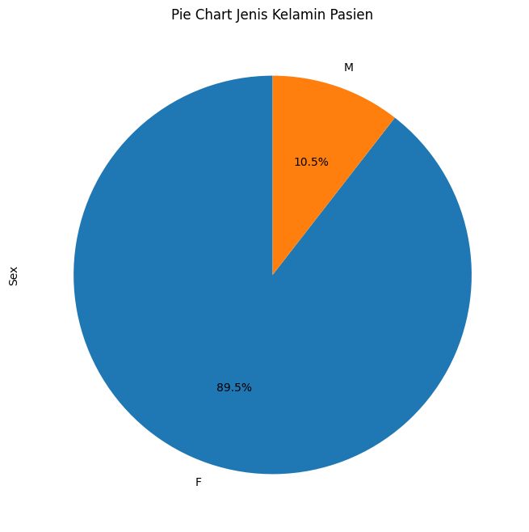
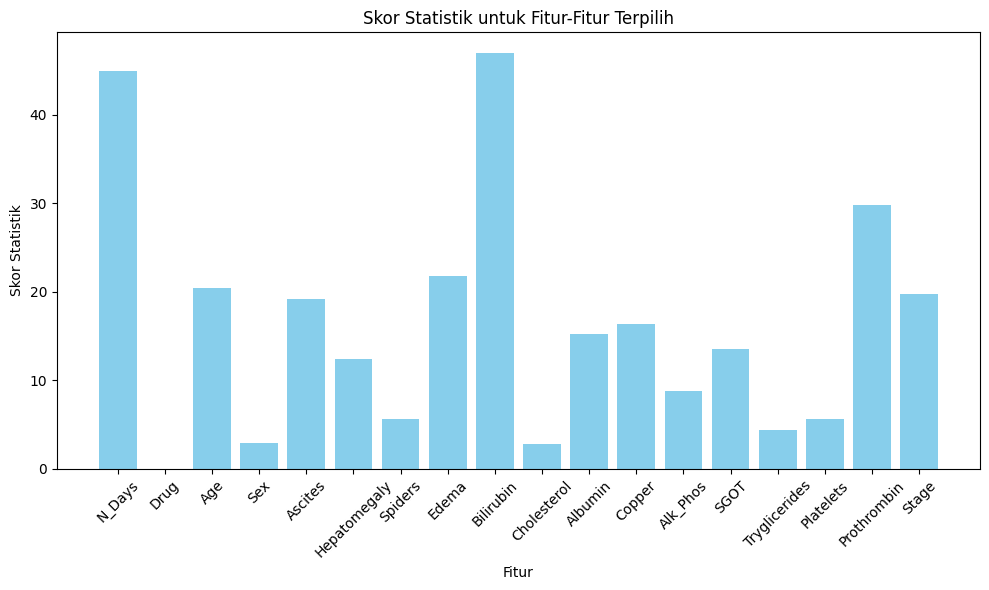

import pandas as pd
from sklearn.preprocessing import StandardScaler
from sklearn.neural_network import MLPClassifier
from sklearn.model_selection import train_test_split, cross_val_score
from sklearn.tree import DecisionTreeClassifier
from sklearn.ensemble import RandomForestClassifier
from sklearn.metrics import accuracy_score
from sklearn.naive_bayes import GaussianNB
from sklearn.linear_model import LogisticRegression
from sklearn.linear_model import Perceptron, SGDClassifier
from sklearn.feature_selection import SelectKBest, f_classif
import matplotlib.pyplot as plt
import joblib
import numpy as np
import seaborn as sns1 Proyek Sains data
Nama : Sadam payoda sabilillah
NIM : 200411100069
2 Data Understanding
Cirrhosis Patient Survival Prediction
Cirrhosis Patient Survival Prediction seperti melakukan prediksi kelangsungan hidup pasien yang menderita dengan penyakit sirosis hati. Sirosis hati adalah kondisi medis yang terjadi ketika jaringan hati normal digantikan oleh jaringan parut, yang dapat mempengaruhi fungsi hati secara signifikan. Proses terbentuknya parut di hati, atau sirosis hati, terjadi sebagai respons terhadap kerusakan yang berulang pada sel hati.
- Untuk tujuan apa kumpulan data tersebut dibuat?
Sirosis terjadi akibat kerusakan hati yang berkepanjangan, sehingga menimbulkan jaringan parut yang luas, sering kali disebabkan oleh kondisi seperti hepatitis atau konsumsi alkohol kronis. Data yang diberikan bersumber dari penelitian Mayo Clinic tentang sirosis bilier primer (PBC) hati yang dilakukan pada tahun 1974 hingga 1984.
2.0.1 -Tujuan mengumpulkan data
Tujuannya apa untuk mengumpulkan data tersebut dan kenapa kita harus mengumpulkan data Cirrhosis Patient Survival Prediction :
Melalui analisis data, peneliti ilmiah dapat mengidentifikasi faktor-faktor risiko apa saja yang berkaitan dengan kelangsungan hidup pasien. Ini dapat mencakup faktor-faktor seperti tingkat keparahan sirosis, komplikasi lainnya, dan respons terhadap pengobatan.
menganalisis data untuk membantu djaalam memahami efektivitas berbagai jenis perawatan dan intervensi pada pasien dengan sirosis hati. Hal ini dapat membantu dokter dalam merencanakan perawatan yang lebih efektif dan tepat waktu agar kemungkinan pada kehidupan penderita sironis hati menjadi lebih aman atau akurasi keberlangsungan hiduo menjadi panjang.
dengan adanya Informasi dataset Cirrhosis Patient Survival Prediction dengan pengidap prognosis sirosis hati dapat digunakan untuk memberikan edukasi kepada masyarakat tentang faktor risiko dan pentingnya deteksi dini. Kesadaran ini dapat meningkatkan upaya pencegahan dan deteksi dini kondisi yang dapat menyebabkan sirosis hati.
Diatas adalah beberapa tujuan pentingnya untuk mengumpulkan data data CDC Diabetes Health Indicator.
2.0.2 Mengenai dataset pada Cirrhosis Patient Survival Prediction
| Fitur | Penjelasan |
|---|---|
| ID | Nomor identifikasi unik untuk setiap pasien. |
| N_Days | Jumlah hari antara pendaftaran dan peristiwa akhir (kematian, transplantasi hati, atau waktu analisis studi pada Juli 1986). |
| Status | Status pasien pada akhir periode pengamatan. Nilai melibatkan C (censored), CL (censored karena transplantasi hati), atau D (kematian). |
| Drug | Jenis obat yang diberikan kepada pasien (D-penicillamine atau plasebo). |
| Age | Umur pasien pada saat pengamatan awal. |
| Sex | Jenis kelamin pasien (M atau F). |
| Ascites | Indikator keberadaan atau tingkat keparahan ascites (penumpukan cairan di rongga perut) Ascites adalah suatu kondisi di mana cairan berlebihan menumpuk dalam rongga perut, antara lapisan organ dalam rongga perut (seperti hati dan usus) dan dinding perut. |
| Hepatomegaly | Hepatomegaly adalah istilah medis yang digunakan untuk menggambarkan pembesaran hati. Hati yang sehat memiliki ukuran tertentu, tetapi berbagai kondisi dapat menyebabkan hati menjadi lebih besar dari ukuran normal, Indikator keberadaan atau tingkat hepatomegali (pembesaran hati). |
| Spiders | “SPIDERS” yang merupakan singkatan dari “Cirrhosis SPiders of the Liver.” Sistem ini dirancang untuk memberikan perkiraan risiko kelangsungan hidup pasien dengan sirosis hati berdasarkan sejumlah parameter klinis dan laboratorium. Indikator keberadaan atau tingkat keparahan spider nevi (pembuluh darah kecil pada kulit, mungkin menjadi tanda sirosis hati). |
| Edema | Edema adalah suatu kondisi medis yang ditandai oleh penumpukan cairan yang berlebihan di dalam jaringan tubuh, biasanya di ruang interstisial antara sel-sel. Ini dapat menyebabkan pembengkakan atau pembesaran area yang terkena. Indikator keberadaan atau tingkat edema, dengan nilai N (tidak ada edema dan tanpa terapi diuretik), S (edema hadir tanpa diuretik, atau edema yang teratasi oleh diuretik), atau Y (edema meskipun terapi diuretik). |
| Bilirubin | Kadar serum bilirubin dalam mg/dl, indikator kerusakan hati. |
| Cholesterol | Kadar serum kolesterol dalam mg/dl. |
| Albumin | Kadar albumin dalam gm/dl, protein yang diproduksi oleh hati. |
| Copper | Kadar tembaga dalam urine (µg/day), indikator gangguan metabolisme tembaga. |
| Alk_Phos | Kadar fosfatase alkali dalam U/liter, indikator kerusakan hati atau masalah tulang. |
| SGOT | Tes darah SGOT sering dilakukan sebagai bagian dari panel fungsi hati untuk mengevaluasi kesehatan hati dan organ-organ lain yang dapat mengandung enzim ini. Kadar serum glutamat oksalat transaminase (SGOT) dalam U/ml, indikator kerusakan hati. |
| Tryglicerides | Kadar trigliserida, indikator kesehatan metabolik. |
| Platelets | Jumlah trombosit per ml/1000, gangguan jumlah trombosit terkait dengan kerusakan hati. |
| Prothrombin | Prothrombin adalah sebuah protein yang terlibat dalam proses pembekuan darah. Ini adalah salah satu faktor pembekuan darah yang penting dan berperan dalam mengubah fibrinogen menjadi fibrin, suatu langkah kunci dalam pembentukan bekuan darah. Waktu protrombin dalam detik, indikator fungsi pembekuan darah. |
| Stage | Tahap atau tingkat keparahan sirosis hati pada saat pengamatan awal (1, 2, 3, atau 4) semakin mendekati 4 maka semakin parah. |
2.1 Melakukan pengambilan dataset
Disini adalah data data dari Cirrhosis Patient Survival Prediction terdapat 19 fitur dan 1 label, untuk labelnya adalah status sebagai kategory dan prediksi pada seseorang, banyaknya data pada dataset tersebut adalah 418 data.
Langkah yang saya lakukan dengan mengambil file penyimpanan saya lalu menggunakan import pandas untuk menampilkan tabel pada dataset.
url = "/content/drive/MyDrive/PSD/Tugas4/cirrhosis.csv"
df = pd.read_csv(url)
df
| ID | N_Days | Status | Drug | Age | Sex | Ascites | Hepatomegaly | Spiders | Edema | Bilirubin | Cholesterol | Albumin | Copper | Alk_Phos | SGOT | Tryglicerides | Platelets | Prothrombin | Stage | |
|---|---|---|---|---|---|---|---|---|---|---|---|---|---|---|---|---|---|---|---|---|
| 0 | 1 | 400 | D | D-penicillamine | 21464 | F | Y | Y | Y | Y | 14.5 | 261.0 | 2.60 | 156.0 | 1718.0 | 137.95 | 172.0 | 190.0 | 12.2 | 4.0 |
| 1 | 2 | 4500 | C | D-penicillamine | 20617 | F | N | Y | Y | N | 1.1 | 302.0 | 4.14 | 54.0 | 7394.8 | 113.52 | 88.0 | 221.0 | 10.6 | 3.0 |
| 2 | 3 | 1012 | D | D-penicillamine | 25594 | M | N | N | N | S | 1.4 | 176.0 | 3.48 | 210.0 | 516.0 | 96.10 | 55.0 | 151.0 | 12.0 | 4.0 |
| 3 | 4 | 1925 | D | D-penicillamine | 19994 | F | N | Y | Y | S | 1.8 | 244.0 | 2.54 | 64.0 | 6121.8 | 60.63 | 92.0 | 183.0 | 10.3 | 4.0 |
| 4 | 5 | 1504 | CL | Placebo | 13918 | F | N | Y | Y | N | 3.4 | 279.0 | 3.53 | 143.0 | 671.0 | 113.15 | 72.0 | 136.0 | 10.9 | 3.0 |
| ... | ... | ... | ... | ... | ... | ... | ... | ... | ... | ... | ... | ... | ... | ... | ... | ... | ... | ... | ... | ... |
| 413 | 414 | 681 | D | NaN | 24472 | F | NaN | NaN | NaN | N | 1.2 | NaN | 2.96 | NaN | NaN | NaN | NaN | 174.0 | 10.9 | 3.0 |
| 414 | 415 | 1103 | C | NaN | 14245 | F | NaN | NaN | NaN | N | 0.9 | NaN | 3.83 | NaN | NaN | NaN | NaN | 180.0 | 11.2 | 4.0 |
| 415 | 416 | 1055 | C | NaN | 20819 | F | NaN | NaN | NaN | N | 1.6 | NaN | 3.42 | NaN | NaN | NaN | NaN | 143.0 | 9.9 | 3.0 |
| 416 | 417 | 691 | C | NaN | 21185 | F | NaN | NaN | NaN | N | 0.8 | NaN | 3.75 | NaN | NaN | NaN | NaN | 269.0 | 10.4 | 3.0 |
| 417 | 418 | 976 | C | NaN | 19358 | F | NaN | NaN | NaN | N | 0.7 | NaN | 3.29 | NaN | NaN | NaN | NaN | 350.0 | 10.6 | 4.0 |
418 rows × 20 columns
2.1.1 permasalahan pada data nan
Jika kita lihat pada tabel terdaopat data yang nan atau missing value, disini saya melihat bahwa data integer dan categori sama sama terdapat missing value, jadi saya melakukan penyelesaian ini dengan terpisah :
missing_values = df.isnull().sum()
# Menampilkan kolom yang memiliki missing value beserta jumlahnya
print("Kolom dengan Missing Value:")
print(missing_values[missing_values > 0])Kolom dengan Missing Value:
Drug 106
Ascites 106
Hepatomegaly 106
Spiders 106
Cholesterol 134
Copper 108
Alk_Phos 106
SGOT 106
Tryglicerides 136
Platelets 11
Prothrombin 2
Stage 6
dtype: int642.1.2 Missing value data bertype Integer dan Continuous
yang saya lakukan ketika terjadinya missing value terhadap data type integer dan Continuous dengan menggunakan
Rumus Interpolate
\[ y = y_1 + (x - x_1) \times \frac{{y_2 - y_1}}{{x_2 - x_1}} \] - x1 dan y1 adalah nilai diatas x2 dan y2 (maksudnya ketika x2 dan y2 tersebut berada pada data ke 4 maka x1 dan y1 di data 3 )
x2 dan y2 adalah nilai diatas Nan yang akan di interpolate dan dibawah nilai xi dan y1
x Nilai yang akan diinterpolasi, dan kita ingin menemukan nilai y yang sesuai di antara dua titik data yang diketahui.
Fungsi interpolate dalam Pandas digunakan untuk mengisi nilai-nilai yang hilang atau yang hilang dalam suatu DataFrame atau Series dengan metode interpolasi. Dalam konteks fungsi ini, interpolasi mengacu pada metode pengisian nilai di antara titik data yang diketahui.
- method: Parameter ini menentukan metode interpolasi yang akan digunakan. Dalam kasus saya menggunakan method linear di mana nilai di antara dua titik data dikalkulasi sebagai garis lurus.
- memilih inplace=True karena perubahan data data nantinya akan di operasikan dan diterapkan langsung pada objek, tanpa perlu menyimpan hasil operasi ke dalam variabel baru.
df.interpolate(method='linear', inplace=True)
df| ID | N_Days | Status | Drug | Age | Sex | Ascites | Hepatomegaly | Spiders | Edema | Bilirubin | Cholesterol | Albumin | Copper | Alk_Phos | SGOT | Tryglicerides | Platelets | Prothrombin | Stage | |
|---|---|---|---|---|---|---|---|---|---|---|---|---|---|---|---|---|---|---|---|---|
| 0 | 1 | 400 | D | D-penicillamine | 21464 | F | Y | Y | Y | Y | 14.5 | 261.0 | 2.60 | 156.0 | 1718.0 | 137.95 | 172.0 | 190.0 | 12.2 | 4.0 |
| 1 | 2 | 4500 | C | D-penicillamine | 20617 | F | N | Y | Y | N | 1.1 | 302.0 | 4.14 | 54.0 | 7394.8 | 113.52 | 88.0 | 221.0 | 10.6 | 3.0 |
| 2 | 3 | 1012 | D | D-penicillamine | 25594 | M | N | N | N | S | 1.4 | 176.0 | 3.48 | 210.0 | 516.0 | 96.10 | 55.0 | 151.0 | 12.0 | 4.0 |
| 3 | 4 | 1925 | D | D-penicillamine | 19994 | F | N | Y | Y | S | 1.8 | 244.0 | 2.54 | 64.0 | 6121.8 | 60.63 | 92.0 | 183.0 | 10.3 | 4.0 |
| 4 | 5 | 1504 | CL | Placebo | 13918 | F | N | Y | Y | N | 3.4 | 279.0 | 3.53 | 143.0 | 671.0 | 113.15 | 72.0 | 136.0 | 10.9 | 3.0 |
| ... | ... | ... | ... | ... | ... | ... | ... | ... | ... | ... | ... | ... | ... | ... | ... | ... | ... | ... | ... | ... |
| 413 | 414 | 681 | D | NaN | 24472 | F | NaN | NaN | NaN | N | 1.2 | 576.0 | 2.96 | 186.0 | 2115.0 | 136.00 | 149.0 | 174.0 | 10.9 | 3.0 |
| 414 | 415 | 1103 | C | NaN | 14245 | F | NaN | NaN | NaN | N | 0.9 | 576.0 | 3.83 | 186.0 | 2115.0 | 136.00 | 149.0 | 180.0 | 11.2 | 4.0 |
| 415 | 416 | 1055 | C | NaN | 20819 | F | NaN | NaN | NaN | N | 1.6 | 576.0 | 3.42 | 186.0 | 2115.0 | 136.00 | 149.0 | 143.0 | 9.9 | 3.0 |
| 416 | 417 | 691 | C | NaN | 21185 | F | NaN | NaN | NaN | N | 0.8 | 576.0 | 3.75 | 186.0 | 2115.0 | 136.00 | 149.0 | 269.0 | 10.4 | 3.0 |
| 417 | 418 | 976 | C | NaN | 19358 | F | NaN | NaN | NaN | N | 0.7 | 576.0 | 3.29 | 186.0 | 2115.0 | 136.00 | 149.0 | 350.0 | 10.6 | 4.0 |
418 rows × 20 columns
2.1.3 Missing value dengan type data categori
yang saya lakukan ketika terjadinya missing value terhadap data type categori dengan menggunakan
rumus Mode imputation
\[ Mode=Nilai Yang Paling Sering Muncul Dalam Fitur Atau Kolom \]
disini diketahui pada dataset saya terdapat 5 fitur yang mengalami missing value, maka saya berasumsi untuk melakukan mode imputation dengan beralasan bahwa perhitungannya dimengerti karena dengan cara melihat nilai yang paling muncul kita dapatkan output untuk data Nan dan menggunakan mode tersebut tidak akan merusak dan mengubah nilai pada data yang lain jadi lebih aman
df['Drug' ].fillna(df['Drug'].mode()[0], inplace=True)
df['Ascites' ].fillna(df['Ascites'].mode()[0], inplace=True)
df['Hepatomegaly' ].fillna(df['Hepatomegaly'].mode()[0], inplace=True)
df['Spiders' ].fillna(df['Stage'].mode()[0], inplace=True)
df['Stage' ].fillna(df['Stage'].mode()[0], inplace=True)
df| ID | N_Days | Status | Drug | Age | Sex | Ascites | Hepatomegaly | Spiders | Edema | Bilirubin | Cholesterol | Albumin | Copper | Alk_Phos | SGOT | Tryglicerides | Platelets | Prothrombin | Stage | |
|---|---|---|---|---|---|---|---|---|---|---|---|---|---|---|---|---|---|---|---|---|
| 0 | 1 | 400 | D | D-penicillamine | 21464 | F | Y | Y | Y | Y | 14.5 | 261.0 | 2.60 | 156.0 | 1718.0 | 137.95 | 172.0 | 190.0 | 12.2 | 4.0 |
| 1 | 2 | 4500 | C | D-penicillamine | 20617 | F | N | Y | Y | N | 1.1 | 302.0 | 4.14 | 54.0 | 7394.8 | 113.52 | 88.0 | 221.0 | 10.6 | 3.0 |
| 2 | 3 | 1012 | D | D-penicillamine | 25594 | M | N | N | N | S | 1.4 | 176.0 | 3.48 | 210.0 | 516.0 | 96.10 | 55.0 | 151.0 | 12.0 | 4.0 |
| 3 | 4 | 1925 | D | D-penicillamine | 19994 | F | N | Y | Y | S | 1.8 | 244.0 | 2.54 | 64.0 | 6121.8 | 60.63 | 92.0 | 183.0 | 10.3 | 4.0 |
| 4 | 5 | 1504 | CL | Placebo | 13918 | F | N | Y | Y | N | 3.4 | 279.0 | 3.53 | 143.0 | 671.0 | 113.15 | 72.0 | 136.0 | 10.9 | 3.0 |
| ... | ... | ... | ... | ... | ... | ... | ... | ... | ... | ... | ... | ... | ... | ... | ... | ... | ... | ... | ... | ... |
| 413 | 414 | 681 | D | D-penicillamine | 24472 | F | N | Y | 3.0 | N | 1.2 | 576.0 | 2.96 | 186.0 | 2115.0 | 136.00 | 149.0 | 174.0 | 10.9 | 3.0 |
| 414 | 415 | 1103 | C | D-penicillamine | 14245 | F | N | Y | 3.0 | N | 0.9 | 576.0 | 3.83 | 186.0 | 2115.0 | 136.00 | 149.0 | 180.0 | 11.2 | 4.0 |
| 415 | 416 | 1055 | C | D-penicillamine | 20819 | F | N | Y | 3.0 | N | 1.6 | 576.0 | 3.42 | 186.0 | 2115.0 | 136.00 | 149.0 | 143.0 | 9.9 | 3.0 |
| 416 | 417 | 691 | C | D-penicillamine | 21185 | F | N | Y | 3.0 | N | 0.8 | 576.0 | 3.75 | 186.0 | 2115.0 | 136.00 | 149.0 | 269.0 | 10.4 | 3.0 |
| 417 | 418 | 976 | C | D-penicillamine | 19358 | F | N | Y | 3.0 | N | 0.7 | 576.0 | 3.29 | 186.0 | 2115.0 | 136.00 | 149.0 | 350.0 | 10.6 | 4.0 |
418 rows × 20 columns
2.1.4 Kesalahan pada inputan Age (Umur)
Pada data tersebut terjadi kesalahan inputan pada salah satu fitur yaitu umur, yang dimana umur tersebut berupa puluhan ribu yang bisa dikatakan bagi kita tidak masuk akal seseorang mempunyai umur senilai puluhan ribu, maka saya modifikasi hanya fitur Age dengan menghapus 3 angka belakang atau saya bagi dengan 1000
df['Age'] = df['Age'] // 1000
df| ID | N_Days | Status | Drug | Age | Sex | Ascites | Hepatomegaly | Spiders | Edema | Bilirubin | Cholesterol | Albumin | Copper | Alk_Phos | SGOT | Tryglicerides | Platelets | Prothrombin | Stage | |
|---|---|---|---|---|---|---|---|---|---|---|---|---|---|---|---|---|---|---|---|---|
| 0 | 1 | 400 | D | D-penicillamine | 21 | F | Y | Y | Y | Y | 14.5 | 261.0 | 2.60 | 156.0 | 1718.0 | 137.95 | 172.0 | 190.0 | 12.2 | 4.0 |
| 1 | 2 | 4500 | C | D-penicillamine | 20 | F | N | Y | Y | N | 1.1 | 302.0 | 4.14 | 54.0 | 7394.8 | 113.52 | 88.0 | 221.0 | 10.6 | 3.0 |
| 2 | 3 | 1012 | D | D-penicillamine | 25 | M | N | N | N | S | 1.4 | 176.0 | 3.48 | 210.0 | 516.0 | 96.10 | 55.0 | 151.0 | 12.0 | 4.0 |
| 3 | 4 | 1925 | D | D-penicillamine | 19 | F | N | Y | Y | S | 1.8 | 244.0 | 2.54 | 64.0 | 6121.8 | 60.63 | 92.0 | 183.0 | 10.3 | 4.0 |
| 4 | 5 | 1504 | CL | Placebo | 13 | F | N | Y | Y | N | 3.4 | 279.0 | 3.53 | 143.0 | 671.0 | 113.15 | 72.0 | 136.0 | 10.9 | 3.0 |
| ... | ... | ... | ... | ... | ... | ... | ... | ... | ... | ... | ... | ... | ... | ... | ... | ... | ... | ... | ... | ... |
| 413 | 414 | 681 | D | D-penicillamine | 24 | F | N | Y | 3.0 | N | 1.2 | 576.0 | 2.96 | 186.0 | 2115.0 | 136.00 | 149.0 | 174.0 | 10.9 | 3.0 |
| 414 | 415 | 1103 | C | D-penicillamine | 14 | F | N | Y | 3.0 | N | 0.9 | 576.0 | 3.83 | 186.0 | 2115.0 | 136.00 | 149.0 | 180.0 | 11.2 | 4.0 |
| 415 | 416 | 1055 | C | D-penicillamine | 20 | F | N | Y | 3.0 | N | 1.6 | 576.0 | 3.42 | 186.0 | 2115.0 | 136.00 | 149.0 | 143.0 | 9.9 | 3.0 |
| 416 | 417 | 691 | C | D-penicillamine | 21 | F | N | Y | 3.0 | N | 0.8 | 576.0 | 3.75 | 186.0 | 2115.0 | 136.00 | 149.0 | 269.0 | 10.4 | 3.0 |
| 417 | 418 | 976 | C | D-penicillamine | 19 | F | N | Y | 3.0 | N | 0.7 | 576.0 | 3.29 | 186.0 | 2115.0 | 136.00 | 149.0 | 350.0 | 10.6 | 4.0 |
418 rows × 20 columns
target_counts = df['Status'].value_counts()
# Menampilkan frekuensi setiap nilai unik dalam kolom target
print(target_counts)C 232
D 161
CL 25
Name: Status, dtype: int642.2 visualisasi data
2.2.1 visual untuk mengetahui banyaknya masing masing jenis kelamin yang terkena penyakit
Dari visualisasi Pie Chart Jenis Kelamin Pasien, terlihat bahwa proporsi pasien perempuan (F) lebih dominan daripada pasien laki-laki (M). Kesimpulan ini dapat diambil dari sebaran data yang menunjukkan bahwa lebih banyak pasien yang dicatat dalam dataset memiliki jenis kelamin perempuan daripada jenis kelamin laki-laki.
plt.figure(figsize=(8, 8))
df['Sex'].value_counts().plot.pie(autopct='%1.1f%%', startangle=90)
plt.title('Pie Chart Jenis Kelamin Pasien')
plt.show()
plt.figure(figsize=(10, 6))
sns.histplot(df['Age'], bins=30, kde=True)
plt.title('Distribusi Umur Pasien')
plt.xlabel('Umur')
plt.ylabel('banyaknya pasien')
plt.show()
plt.figure(figsize=(10, 6))
sns.boxplot(x='Age', y='Status', data=df)
plt.title('Hubungan antara Umur dan Status Pasien')
plt.xlabel('Status Pasien')
plt.ylabel('Umur')
plt.show()

2.2.2 Visual tentang seberapa pengaruh Cirrhosis Patient pada umur tertent
Rentang Usia Remaja (17-20 tahun): Pada rentang usia ini, terlihat adanya peningkatan signifikan dalam Cirrhosis Patient . Hal ini dapat menunjukkan bahwa remaja dalam kelompok usia ini mungkin memiliki faktor risiko tertentu yang berkontribusi pada prediksi penyakit hati. Status Pasien pada Usia 12-15 Tahun:
Prediksi status C (censored) yang lebih dominan pada kelompok usia 12-15 tahun mungkin menunjukkan adanya kecenderungan untuk peristiwa yang tidak dapat diamati secara penuh. Ini bisa disebabkan oleh data yang tidak lengkap atau informasi yang tidak tersedia setelah periode pengamatan tertentu. Status Pasien pada Usia 14-20 Tahun:
Rentang usia 14-20 tahun menunjukkan kecenderungan prediksi status CL (censored karena transplantasi hati). Ini mungkin menandakan bahwa di dalam kelompok ini, pasien memiliki perawatan atau intervensi medis tertentu yang menyebabkan data pengamatan terhenti, seperti transplantasi hati. Status Pasien pada Usia 16-22 Tahun:
Pada usia ini, prediksi status D (kematian) mulai muncul lebih sering. Hal ini bisa menunjukkan tingkat keparahan penyakit atau faktor risiko tambahan yang dapat memengaruhi hasil pasien pada kelompok usia tersebut.
Disini pada label mempunya 3 kelas yaitu: - C (Censored): Artinya pasien tidak mengalami peristiwa akhir atau mati selama periode pengamatan. Data pasien tersebut “censored” karena tidak ada informasi akhir yang tersedia. - CL (Censored due to liver tx) Artinya pasien tidak mengalami peristiwa akhir karena censored dan peristiwa censored tersebut terjadi karena pasien menjalani transplantasi hati. - D (Death): Artinya pasien mengalami kematian sebagai peristiwa akhir selama periode pengamatan
diatas bahwa data terbanyak yaitu categori C
Perbedaan C dan CL yaitu C keterangannya tidak peristiwa akhir atau mati tapi tidak melakukan transplantasi hati sedangkan CL juga tidak ada tanda tanda peristiwa akhir tetapi harus menjalankan transplantasi hati untuk menggantikan hati yang rusak
jumlah_kategori = df['Status'].nunique()
# Menampilkan jumlah kategori
print("Jumlah kategori pada target:", jumlah_kategori)Jumlah kategori pada target: 3Memisahkan antara fitur dengan label
X = df.drop(['Status','ID'], axis=1)
y = df["Status"]2.3 Seleksi fitur
sebelum melakukan preprocessing data alangkah baiknya untuk menyeleksikan fitur fitur yang menurut kita adalah fitur yang tidak berpengaruh terhadap dataset dan mengurangi beban dataset agar tidak menyebabkan overfitting
Disini saya menggunakan sckit learn untuk melakukan selection pada fitur - yang pertama saya menentukan banyaknya fitur terdapat N = banyak fitur, fitur yang ada didataset adalah 19 fitur - Jumlah fitur terbaik yang terpilih disesuaikan dengan nilai K di atas - ambil data data pada setiap fitur menggunakan funtion colomns dan nama pada fitur akan dimasukan kedalam selected_feature_names - lalu proses melakukan perhitungan statistik ANOVA dengan rumus
\[ F = \frac{MSB}{MSW} \] MSB atau mean square antar kelompok (mean square between groups). dapat dari rumus ini :
\[ MSB = \frac{\sum_{i=1}^{k} n_i (\bar{X}_i - \bar{X}_{\text{total}})^2}{k - 1} \] dan MSW atau mean square dalam kelompok (mean square within groups)
\[ MSW = \frac{\sum_{i=1}^{k} \sum_{j=1}^{n_i} (X_{ij} - \bar{X}_i)^2}{N - k} \] Untuk hasil akhirnya saya menghapus 8 fitur yang menurut saya tidak akan berpengaruh terhadap dataset saya
# Misalkan 'Feature1' dan 'Feature2' adalah nama dua fitur yang ingin diubah
X['Drug'] = X['Drug'].astype('category').cat.codes
X['Ascites'] = X['Ascites'].astype('category').cat.codes
X['Hepatomegaly'] = X['Hepatomegaly'].astype('category').cat.codes
X['Spiders'] = X['Spiders'].astype('category').cat.codes
X['Stage'] = X['Stage'].astype('category').cat.codes
X['Sex'] = X['Sex'].astype('category').cat.codes
X['Edema'] = X['Edema'].astype('category').cat.codes
selector = SelectKBest(score_func=f_classif, k=18) # K adalah jumlah fitur terbaik yang akan dipilih
# # Lakukan seleksi fitur
selector.fit(X, y)
# # Tampilkan hasil seleksi fitur
# # Jumlah fitur terbaik yang terpilih disesuaikan dengan nilai K di atas
selected_features = selector.get_support(indices=True)
# # Ambil nama-nama fitur yang dipilih
# selected_feature_names = [data.feature_names[i] for i in selected_features]
# # Hitung skor statistik untuk setiap fitur
# scores = selector.scores_[selected_features]
feature_names = X.columns
# Pilih nama-nama fitur yang dipilih
selected_feature_names = [feature_names[i] for i in selected_features]
# Sisa kode Anda tetap sama
# Hitung skor statistik untuk setiap fitur
scores = selector.scores_[selected_features]
# Membuat bar chart
plt.figure(figsize=(10, 6))
plt.bar(selected_feature_names, scores, color='skyblue')
plt.xlabel('Fitur')
plt.ylabel('Skor Statistik')
plt.title('Skor Statistik untuk Fitur-Fitur Terpilih')
plt.xticks(rotation=45)
plt.tight_layout()
# Menampilkan grafik
plt.show()
X = df.drop(['N_Days','ID','Status','Drug','Sex','Spiders','Cholesterol','Tryglicerides','Platelets'], axis=1)
X| Age | Ascites | Hepatomegaly | Edema | Bilirubin | Albumin | Copper | Alk_Phos | SGOT | Prothrombin | Stage | |
|---|---|---|---|---|---|---|---|---|---|---|---|
| 0 | 21 | Y | Y | Y | 14.5 | 2.60 | 156.0 | 1718.0 | 137.95 | 12.2 | 4.0 |
| 1 | 20 | N | Y | N | 1.1 | 4.14 | 54.0 | 7394.8 | 113.52 | 10.6 | 3.0 |
| 2 | 25 | N | N | S | 1.4 | 3.48 | 210.0 | 516.0 | 96.10 | 12.0 | 4.0 |
| 3 | 19 | N | Y | S | 1.8 | 2.54 | 64.0 | 6121.8 | 60.63 | 10.3 | 4.0 |
| 4 | 13 | N | Y | N | 3.4 | 3.53 | 143.0 | 671.0 | 113.15 | 10.9 | 3.0 |
| ... | ... | ... | ... | ... | ... | ... | ... | ... | ... | ... | ... |
| 413 | 24 | N | Y | N | 1.2 | 2.96 | 186.0 | 2115.0 | 136.00 | 10.9 | 3.0 |
| 414 | 14 | N | Y | N | 0.9 | 3.83 | 186.0 | 2115.0 | 136.00 | 11.2 | 4.0 |
| 415 | 20 | N | Y | N | 1.6 | 3.42 | 186.0 | 2115.0 | 136.00 | 9.9 | 3.0 |
| 416 | 21 | N | Y | N | 0.8 | 3.75 | 186.0 | 2115.0 | 136.00 | 10.4 | 3.0 |
| 417 | 19 | N | Y | N | 0.7 | 3.29 | 186.0 | 2115.0 | 136.00 | 10.6 | 4.0 |
418 rows × 11 columns
2.4 Mengganti categori menjadi numerik
Sebelum melakukan preprosessing pada dataset saya diketahui memiliki categori yang harus diganti menjadi numerik, maka saya gunakan code seperti dibawah :
X['Ascites'] = X['Ascites'].astype('category').cat.codes
X['Hepatomegaly'] = X['Hepatomegaly'].astype('category').cat.codes
X['Edema'] = X['Edema'].astype('category').cat.codes
X| Age | Ascites | Hepatomegaly | Edema | Bilirubin | Albumin | Copper | Alk_Phos | SGOT | Prothrombin | Stage | |
|---|---|---|---|---|---|---|---|---|---|---|---|
| 0 | 21 | 1 | 1 | 2 | 14.5 | 2.60 | 156.0 | 1718.0 | 137.95 | 12.2 | 4.0 |
| 1 | 20 | 0 | 1 | 0 | 1.1 | 4.14 | 54.0 | 7394.8 | 113.52 | 10.6 | 3.0 |
| 2 | 25 | 0 | 0 | 1 | 1.4 | 3.48 | 210.0 | 516.0 | 96.10 | 12.0 | 4.0 |
| 3 | 19 | 0 | 1 | 1 | 1.8 | 2.54 | 64.0 | 6121.8 | 60.63 | 10.3 | 4.0 |
| 4 | 13 | 0 | 1 | 0 | 3.4 | 3.53 | 143.0 | 671.0 | 113.15 | 10.9 | 3.0 |
| ... | ... | ... | ... | ... | ... | ... | ... | ... | ... | ... | ... |
| 413 | 24 | 0 | 1 | 0 | 1.2 | 2.96 | 186.0 | 2115.0 | 136.00 | 10.9 | 3.0 |
| 414 | 14 | 0 | 1 | 0 | 0.9 | 3.83 | 186.0 | 2115.0 | 136.00 | 11.2 | 4.0 |
| 415 | 20 | 0 | 1 | 0 | 1.6 | 3.42 | 186.0 | 2115.0 | 136.00 | 9.9 | 3.0 |
| 416 | 21 | 0 | 1 | 0 | 0.8 | 3.75 | 186.0 | 2115.0 | 136.00 | 10.4 | 3.0 |
| 417 | 19 | 0 | 1 | 0 | 0.7 | 3.29 | 186.0 | 2115.0 | 136.00 | 10.6 | 4.0 |
418 rows × 11 columns
diatas terdapat cara untuk menggantikan sebuah type kategori menjadi numerik, terdapat fungsi yang saya pakai :
astype(‘category’) , funtion tersebut untuk memberi tahu bahwa pada fitur tersebut adalah type category
cat.codes untuk mengubah category menjadi numerik, Bilangan bulat yang diberikan dimulai dari 0 dan terus bertambah seiring dengan munculnya nilai kategori yang baru. contohnya pada fitur Sex mempunyai 2 category yaitu wanita dan lelaki, maka wanita akan diganti menjadi 0 dan lelaki akan menjadi 1
from sklearn.preprocessing import MinMaxScaler3 Preprocessing data
3.1 Split data menjadi train data dan test data
train_test_split adalah suatu fungsi dalam library scikit-learn yang digunakan untuk membagi dataset menjadi dua set, yaitu set pelatihan (training set) dan set pengujian (testing set). Pemisahan ini bertujuan untuk melakukan pelatihan model pada set pelatihan dan menguji kinerja model pada set pengujian. Fungsi ini sangat umum digunakan dalam proses machine learning untuk menghindari overfitting dan mengevaluasi kemampuan generalisasi dari model yang telah dilatih
test_size (opsional): Menentukan ukuran set pengujian sebagai proporsi dari seluruh dataset. Nilai ini bisa berupa pecahan (misalnya, 0.2 untuk 20%) atau bilangan bulat yang menyatakan jumlah sampel yang akan ditempatkan di set pengujian.
random_state (opsional): Digunakan untuk mengontrol randomization selama pembagian dataset. Jika nilai ini diberikan, pemisahan dataset akan tetap konsisten setiap kali fungsi ini dijalankan
X_train, X_test, y_train, y_test = train_test_split(X, y, test_size=0.2, random_state=42)3.2 Normalisasi data
Setelah melakukan understanding data maka melakukan preprocessing yang dimana data akan di jadikan antara 0 sampai 1
dengan menggunakan minmaxScaller untuk menormalisasi data , dan menggunakan train_test_split untuk mendapatkan data training dan data testing
rumus MinmaxScaler:
\[ \text{Scaled Value} = \frac{\text{Original Value} - \text{Min}}{\text{Max} - \text{Min}} \] - Original Value adalah nilai asli dari fitur.
Min adalah nilai minimum dari fitur.
Max adalah nilai maksimum dari fitur.
fit_transform Fungsinya ini menghitung parameter normalisasi dari dataset (seperti nilai minimum dan maksimum) dan kemudian mengaplikasikan normalisasi pada dataset tersebut. Fungsi ini berguna untuk menghitung parameter normalisasi berdasarkan data pelatihan dan sekaligus menerapkan normalisasi tersebut.
Setelah kita telah menggunakan fit_transform pada data pelatihan, kita dapat menggunakan metode transform pada data pengujian (dan data lainnya yang ingin dinormalisasi) menggunakan parameter normalisasi yang telah dihitung sebelumnya. Metode ini hanya melakukan normalisasi tanpa perlu menghitung parameter normalisasi lagi.
scaler = MinMaxScaler()
X_train_scaler = scaler.fit_transform(X_train)
X_test_scaler = scaler.transform(X_test)
x = pd.DataFrame(X_train,columns=X.columns)
x| Age | Ascites | Hepatomegaly | Edema | Bilirubin | Albumin | Copper | Alk_Phos | SGOT | Prothrombin | Stage | |
|---|---|---|---|---|---|---|---|---|---|---|---|
| 336 | 20 | 0 | 1 | 0 | 1.8 | 3.64 | 186.0 | 2115.0 | 136.00 | 10.0 | 3.0 |
| 31 | 19 | 0 | 1 | 0 | 1.8 | 3.34 | 101.0 | 7277.0 | 82.56 | 10.6 | 4.0 |
| 84 | 17 | 0 | 1 | 0 | 2.1 | 3.48 | 58.0 | 2045.0 | 89.90 | 11.5 | 4.0 |
| 287 | 17 | 0 | 1 | 1 | 8.7 | 3.89 | 107.0 | 637.0 | 117.00 | 9.6 | 2.0 |
| 317 | 15 | 0 | 1 | 0 | 0.7 | 3.68 | 186.0 | 2115.0 | 136.00 | 9.5 | 2.0 |
| ... | ... | ... | ... | ... | ... | ... | ... | ... | ... | ... | ... |
| 71 | 11 | 0 | 0 | 0 | 0.5 | 3.54 | 51.0 | 1243.0 | 122.45 | 10.0 | 3.0 |
| 106 | 22 | 0 | 0 | 0 | 0.6 | 4.03 | 10.0 | 648.0 | 71.30 | 17.1 | 1.0 |
| 270 | 18 | 0 | 1 | 0 | 1.0 | 3.50 | 94.0 | 955.0 | 111.00 | 9.7 | 3.0 |
| 348 | 19 | 0 | 1 | 0 | 1.4 | 3.82 | 186.0 | 2115.0 | 136.00 | 10.3 | 2.0 |
| 102 | 17 | 1 | 1 | 2 | 2.5 | 3.67 | 57.0 | 1273.0 | 119.35 | 11.1 | 4.0 |
334 rows × 11 columns
4 Modeling data
4.1 Melatih Model menggunakan decision tree
Decision tree (pohon keputusan) adalah model prediktif yang digunakan dalam machine learning dan data mining. Model ini mengambil bentuk pohon dengan setiap simpul (node) yang mewakili keputusan atau pengujian terhadap suatu fitur, cabang (branch) yang mengarah ke simpul lainnya, dan daun (leaf) yang memberikan hasil atau prediksi. Decision tree digunakan untuk tugas klasifikasi dan regresi.
\[\begin{equation} \text{Jika } X_i \leq T \text{ maka cabang kiri, else cabang kanan} \end{equation}\]
decision_tree_model = DecisionTreeClassifier()
# Latih model
decision_tree_model.fit(X_train, y_train)
# Prediksi dengan model
decision_tree_predictions = decision_tree_model.predict(X_test)
# Evaluasi kinerja model
decision_tree_accuracy = accuracy_score(y_test, decision_tree_predictions)4.2 Melatih Model menggunakan Random Forest
Random Forest adalah sebuah algoritma machine learning yang digunakan untuk tugas klasifikasi, regresi, dan pengurangan dimensi. Ini merupakan jenis algoritma ensemble, yang menggabungkan beberapa model untuk meningkatkan kinerja dan kestabilan prediksi. Algoritma Random Forest membangun beberapa pohon keputusan selama pelatihan dan menggabungkan hasil prediksi dari pohon-pohon tersebut untuk membuat prediksi yang lebih akurat dan stabil
Prediksi pada Pohon Keputusan \[ \text{Prediction}_{\text{tree}} = \text{MajorityClass}(\text{Samples in Leaf}) \]
Aggregasi Prediksi dari Semua Pohon (Klasifikasi) \[ \text{Final Prediction}_{\text{RF}} = \text{MajorityClass}(\text{Predictions from all Trees}) \]
Aggregasi Prediksi dari Semua Pohon (Regresi) \[ \text{Final Prediction}_{\text{RF}} = \text{Average}(\text{Predictions from all Trees}) \]
# Buat model Random Forest
random_forest_model = RandomForestClassifier(n_estimators=100)
# Latih model
random_forest_model.fit(X_train, y_train)
# Prediksi dengan model
random_forest_predictions = random_forest_model.predict(X_test)
# Evaluasi kinerja model
random_forest_accuracy = accuracy_score(y_test, random_forest_predictions)4.3 Melatih Model menggunakan Logistic Regression
Logistic Regression (Regresi Logistik) adalah algoritma machine learning yang digunakan untuk tugas klasifikasi. Meskipun memiliki kata “regresi” dalam namanya, logistic regression sebenarnya digunakan untuk masalah klasifikasi biner, di mana tujuannya adalah memprediksi kelas target yang memiliki dua kemungkinan nilai (biasanya 0 atau 1).
\[ P(Y=1) = \frac{1}{1 + e^{-(\beta_0 + \beta_1 X_1 + \beta_2 X_2 + \ldots + \beta_n X_n)}} \]
- P(Y=1) adalah probabilitas kejadian
- Y sama dengan 1.
- e adalah basis logaritma natural.
- b adalah bobot .
- X adalah data .
model = LogisticRegression()
# Latih model
model.fit(X_train_scaler, y_train)
# Prediksi dengan model
logistic_regression_predictions = model.predict(X_test)
# Evaluasi kinerja model
logistic_regression_accuracy = accuracy_score(y_test, logistic_regression_predictions)/usr/local/lib/python3.10/dist-packages/sklearn/base.py:432: UserWarning: X has feature names, but LogisticRegression was fitted without feature names
warnings.warn(4.4 Melatih data menggunakan Jaringan Saraf Tiruan
Jaringan Saraf Tiruan (JST) atau Neural Networks adalah bagian integral dari machine learning. Neural networks terinspirasi oleh struktur dan fungsi otak manusia dan dapat digunakan untuk menangani tugas-tugas kompleks seperti klasifikasi, regresi, pengenalan pola, dan bahkan pembelajaran tugas-tugas yang lebih kompleks
# Buat model Jaringan Saraf Tiruan
neural_network_model = MLPClassifier(hidden_layer_sizes=(64, 32), max_iter=1000, random_state=42)
# Latih model
neural_network_model.fit(X_train_scaler, y_train)
# Prediksi dengan model
neural_network_predictions = neural_network_model.predict(X_test)
# Evaluasi kinerja model
neural_network_accuracy = accuracy_score(y_test, neural_network_predictions)/usr/local/lib/python3.10/dist-packages/sklearn/neural_network/_multilayer_perceptron.py:686: ConvergenceWarning: Stochastic Optimizer: Maximum iterations (1000) reached and the optimization hasn't converged yet.
warnings.warn(
/usr/local/lib/python3.10/dist-packages/sklearn/base.py:432: UserWarning: X has feature names, but MLPClassifier was fitted without feature names
warnings.warn(4.5 Melatih data menggunakan Percepton
Perceptron adalah model dasar dalam machine learning yang digunakan untuk tugas klasifikasi biner. Perceptron dirancang untuk memodelkan neuron dalam otak manusia dan dapat digunakan untuk memisahkan dua kelas dengan menarik garis pemisah linier. Namun, perceptron memiliki keterbatasan dan biasanya digunakan sebagai dasar untuk model neural network yang lebih kompleks
\[ \text{Output} = \begin{cases} 1 & \text{jika } \sum_{i=1}^{n} w_i x_i + b > 0 \\ 0 & \text{lainnya} \end{cases} \]
# Buat model Perceptron
perceptron_model = Perceptron(max_iter=1000, random_state=42)
# Latih model Perceptron
perceptron_model.fit(X_train_scaler, y_train)
# Prediksi dengan model Perceptron
perceptron_predictions = perceptron_model.predict(X_test)
# Evaluasi kinerja model Perceptron
perceptron_accuracy = accuracy_score(y_test, perceptron_predictions)/usr/local/lib/python3.10/dist-packages/sklearn/base.py:432: UserWarning: X has feature names, but Perceptron was fitted without feature names
warnings.warn(5 Evaluasi
print("Akurasi decision_tree:", decision_tree_accuracy)
print("Akurasi Random Forest:", random_forest_accuracy)
print("Akurasi Regresi Logistik:", logistic_regression_accuracy)
print("Akurasi neural_network:", neural_network_accuracy)
print("Akurasi Perceptron:", perceptron_accuracy)Akurasi decision_tree: 0.7380952380952381
Akurasi Random Forest: 0.75
Akurasi Regresi Logistik: 0.42857142857142855
Akurasi neural_network: 0.42857142857142855
Akurasi Perceptron: 0.42857142857142855Pada akurasi ini adalah paling tinggi di model yang lain, maka saya memilih metode random forest, alasan lainnya mengapa menggunakan Random Forest Dengan mempertimbangkan akurasinya lebih tinggi dari pada model yang lain , Random Forest juga dapat mengurangi risiko overfitting pada data pelatihan
# import pickle
# # Simpan model ke file
# with open('/content/drive/MyDrive/PSD/Tugas4/saved.pkl', 'wb') as file:
# pickle.dump(random_forest_model, file)
import joblib
# from sklearn.externals import joblib
joblib.dump(random_forest_model, '/content/drive/MyDrive/PSD/Tugas4/saved_data.joblib')['/content/drive/MyDrive/PSD/Tugas4/saved_data.joblib']loaded_model = joblib.load('/content/drive/MyDrive/PSD/Tugas4/saved_data.joblib')
new_data = [20,0,1,0,1.8,3.64,186.0,2115.0,136.00,10.0,3.0]
prediction = loaded_model.predict([new_data])
print(prediction)['D']/usr/local/lib/python3.10/dist-packages/sklearn/base.py:439: UserWarning: X does not have valid feature names, but RandomForestClassifier was fitted with feature names
warnings.warn(